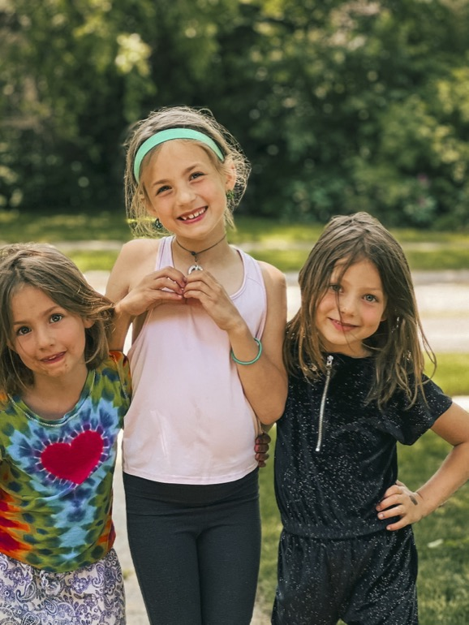
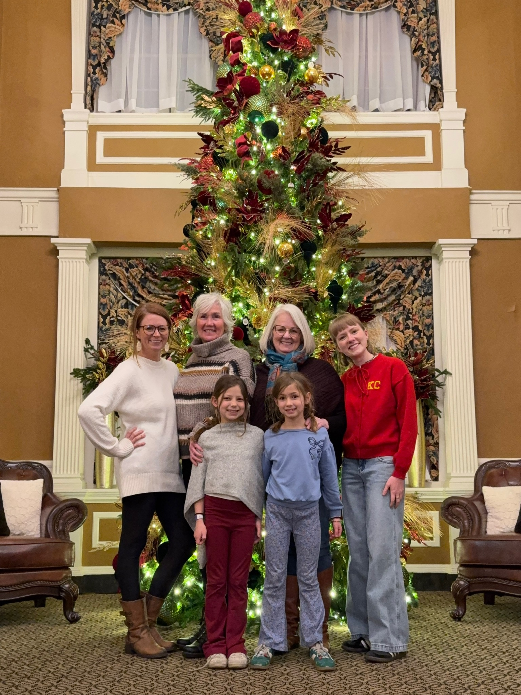
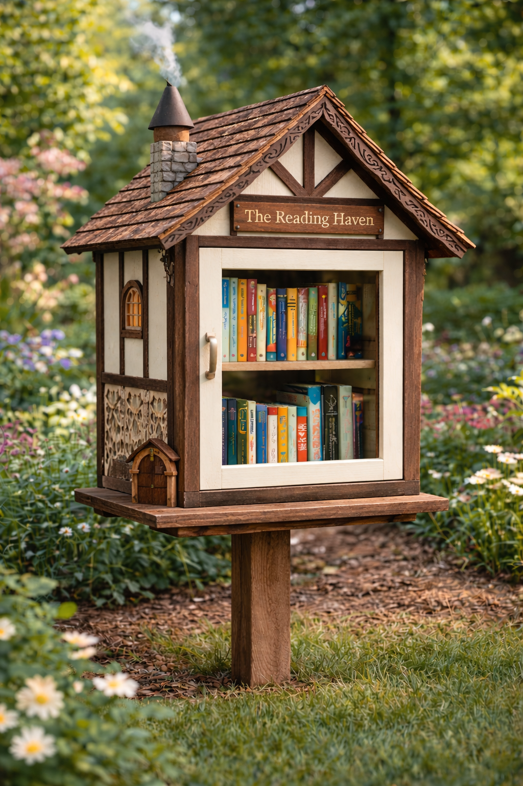
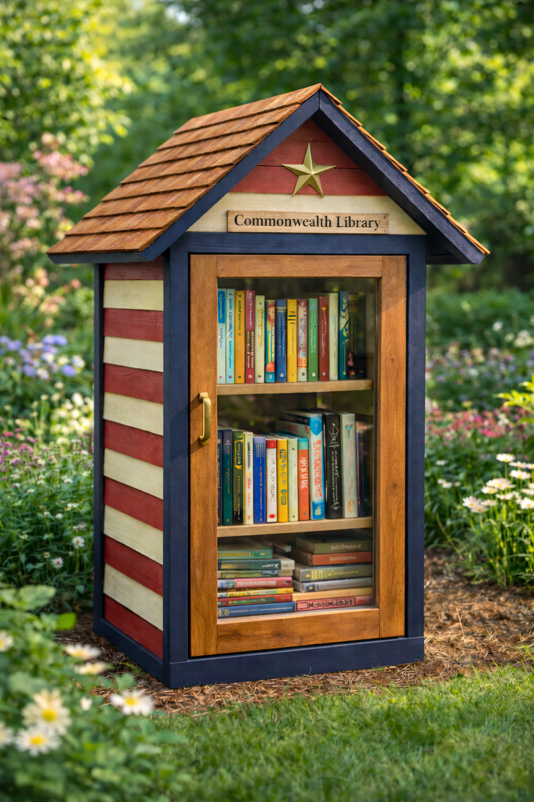
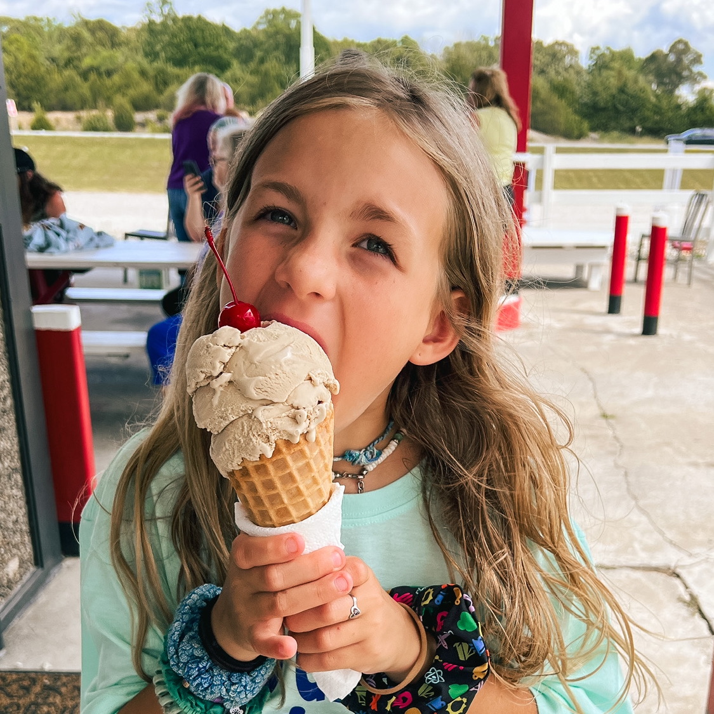
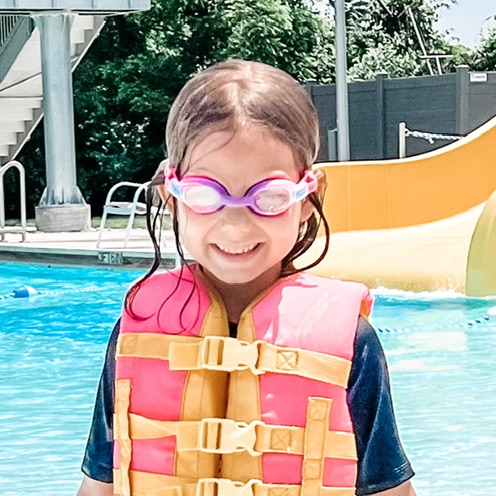
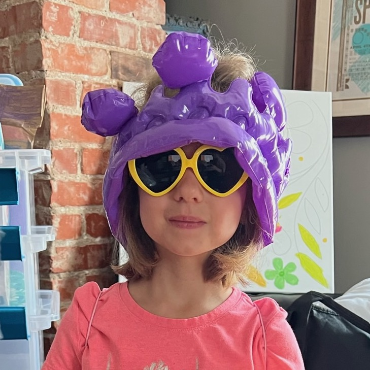
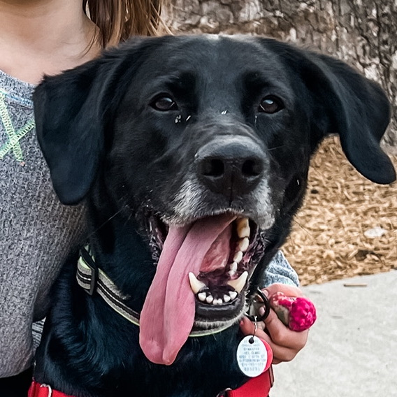

Built together.
3 Sœurs (French for three sisters) started in a shop built by hand, slowly, with help from friends. It's a family of three daughters, a mom, a dad, and a dog named Rufus, working side by side and figuring things out as we go.
We believe that making things together changes how you see work, time, and one another. That working side by side can create something meaningful, lasting, and shared.


What we're currently making
Right now, we're making little libraries. Small structures meant to live outdoors, collect stories, and quietly invite people to stop. They're a way to share books, meet neighbors, and create small moments of connection where people pass by every day.
Each one is built to be used, weathered, and cared for by a community.

After the Rain
$300
A small reading shelter that favors quiet, softness, and the feeling of things newly washed.

The Cedar Exchange
$300
Built to change. Exposed cedar weathers slowly, fading into a quiet silver-gray as years pass.

The Half-Timber Library
$350
A small reading shelter that feels borrowed from folklore, as if built for gnomes, elves, or other quiet residents.

The Greenhouse
$400
A place for reading shaped by light, growth, and seasonal change.

Commonwealth Library
$300
Built as a shared civic object, it belongs to the neighborhood through use, care, and continuity.

Mosshouse
$300
A reading shelter shaped by moisture, softness, and stillness.
How we work together
We do have roles here, but they're held lightly. Each of us leans into what we're best at, and steps in wherever the work needs help. Some days that means designing and painting. Other days it's building, planning, telling stories, or keeping things moving.
The work shifts between us. That's part of how it stays shared.

Jane
Storytelling & Sales
Often telling the story, sharing what we're making, and helping things find their way into the world.

Ruby
Design & Color
Drawn to color, design, and how things look and feel once they're finished.

Lucy
Construction & Counting
Usually building, counting, and making sure things hold together the way they should.
Mommy
Operations & Planning
Keeping things organized, planned, and moving forward with care.

Daddy
Architect & Builder
Designing, building, and helping turn ideas into something solid.

Rufus
Chief Morale Officer
Always nearby, supervising quietly, and reminding everyone to take breaks.
An open door
These projects are meant to move beyond our hands and into other places. If you're curious about a little library, a custom build, or working together in some way, you can reach us here.